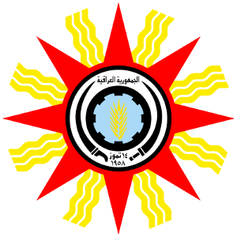
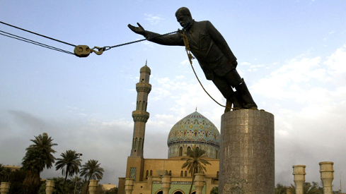

جمهورية العـراق
Republic of Iraq
UW-MUN - NWMUN 2016
Map of Iraq
General Statistics
- Population: ~34,000,000
- UN Membership: December 21, 1945
- UN Country Team coordinates UN activity (20 agencies) in Iraq
History of Iraq
The Ottoman Empire
- 1533 - Ottomans establish autonomous rule
- 1831 - End of Mamluk dynasty, direct rule established
World War I
1914-1918

- 1914 - British-Indian forces invade lower Mesopotamia
- 1915 - British forces defeated in Siege of Kut
- 1917 - British forces capture Baghdad
Fall of the Ottoman Empire
- 1920 - League of Nations awards Mesopotamia mandate to British
- Hashemite monarchy established - King Faisal I
- 1932 - Mandate ends, Iraq becomes independent
(Independent) Kingdom of Iraq
1932-1958
King Ghazi
1933-1939
- 1933 - Assisted in the massacre of Assyrians
- 1939 - Dies in a car accident
- Wanted to unify Iraq and Kuwait
- Under aged sun must rule with a regent
Golden Square Coup
1941

- Nationalist Sunni officers
- Wanted to liberate Iraq from British influence
- Intended to trade oil with the Axis for military assistance
- British invade and occupy until 1947 - King Faisal II reinstated
(First) Republic of Iraq
1958-1968
Abd al-Karim Qasim
1958-1963
- Inspired by Pan-Arab nationlism (Nasser - Egypt)
- Attempted to establish equality with the Kurds
- Overthrown in Ba'th coup - Abdul Salam Arif
1963 Coups
- Feb - Ba'th Socialist government established
- July - Military coup, Ahmed Hassan al-Bakr
- Nov - Pro-Nasserist coup, Ali Salih al-Sa'di
Ba'athist Iraq
1968-2001
Sadaam Hussein
1968-2001
- 1968-1979 - Chief of Intelligence Services
- 1971-2001 - President of Iraq
- Secular state frequently embroiled in conflicts with neighbors
Iran-Iraq War
1980-1988
- 1980 - Hussein launches invasion believing Revolutionary Iran to be weak
- 1981 - Iraqi invasion stalls
- 7 additional years of war ruins of Iraqi economy
Iraqi Invasion of Kuwait
1990
- Iraq in severe debt after involvement in conflicts
- Hussein accuses Kuwait of reducing oil prices through increased production
- Aug - Invasion and annexation of Kuwait
Operation Desert Shield
Aug 1990 - Jan 1991
- Fear of Iraqi invasion of Saudi Arabia
- Coalition forces (32 nations) build up in Saudi Arabia
- Paves the way for counter-attack
Operation Desert Storm
Jan 1991 - Feb 1991
- Coalition invades Kuwait
- Iraqi forces burn oil wells on retreat
- Coalition stops short of deposing Hussein
- UN sanctions in an attempt to end Hussein's Regime
Global War on Terror
2001
- Al-Qaeda terrorist attacks on the US
- Bush Administration interested in bringing down Hussein's regime
Invasion of Iraq
2003-2011
- Pretext of WMDs in Iraq
- Hussein and Ba'th party deposed
- Drawn out insurgency against US occupation
- 2011 - Final withdrawal of US troops
Republic of Iraq
2005-Present
- Post war reconstruction and reconciliation
- Moderating conflict between Sunni and Shia Muslims
- Rise and threat of the Islamic State (Daesh)